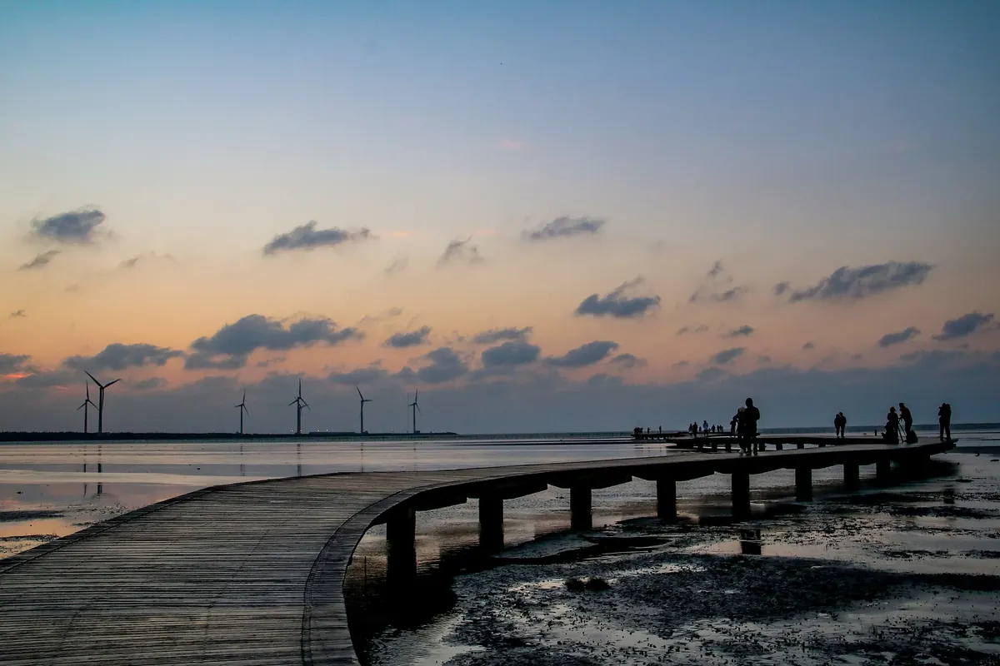

가오메이 습지·궁원안과·무지개마을 투어, 타이중 시내에선 뭘 먹을까?
노을 명소와 벽화 마을, 옛 안과 건물을 도는 투어 전에, 궁원안과 근처 맛집을 챙겨보세요.
게시 · 수정
타이중(臺中) 명소 가운데 가오메이 습지(高美濕地), 궁원안과(宮原眼科), 무지개마을(彩虹眷村)은 서로 떨어져 있어서 하루에 묶으려면 투어가 편해요. 타이중역 옆 궁원안과 주변에는 지도에 등록된 맛집이 많아서 그 근처에서 한 끼를 해결하기 좋아요. 交通部觀光署와 臺中觀光旅遊網 자료를 바탕으로 2026년 10월 기준으로 정리했어요.
01 · 세 곳은 어떤 곳일까
가오메이 습지는 大甲溪 하구 남쪽의 약 701.3헥타르 습지로 120종 넘는 새가 찾아오는 생태 보호구역이에요. 궁원안과는 1927년 지은 옛 안과 병원을 日出 팀이 디저트 가게로 바꾼 곳이고, 무지개마을은 黃永阜 할아버지가 그림을 그려 알려진 작은 마을이에요. 2022년 7월 일부 벽화가 페인트로 덧칠돼 훼손됐고, 지금은 할아버지의 원작과 시민·학생이 함께 그린 새 작품이 섞여 있어요(타이중시 문화국 발표).

02 · 꼭 볼 것
가오메이 습지 노을 바다 쪽 풍력 발전기 뒤로 해가 지는 풍경이 가장 유명해요. 갯벌 위 나무 데크는 물때에 맞춰 열려요.
궁원안과 책장 진열대 천장까지 닿는 책장 모양 진열대가 볼거리이고, 아이스크림과 펑리수 같은 선물용 과자가 인기예요.
무지개마을 원작 벽화는 일부만 남아 있고 나머지는 시민 공동 창작 작품이에요. 그래도 색이 화려해 사진 찍기 좋고, 30분~1시간이면 둘러볼 수 있어요.
03 · 가는 법
투어로 가기 일정, 포함 사항, 출발 장소와 시간은 상품 옵션마다 달라요. 예약 전에 클룩 상품 페이지에서 꼭 확인하세요.
04 · 궁원안과 근처에서 들르기 좋은 맛집
궁원안과에서 0.3km 안쪽, 타이중역 앞에 지도에 등록된 가게가 모여 있어요. 아래 거리는 궁원안과에서 잰 직선거리예요.
궁원안과 미야하라아이스크림 · 빙수 · 궁원안과 건물 안 지도에 빙수(으)로 등록된 곳이에요.
Taiwan Chen Hot Pot · 훠궈 · 북서쪽 약 0.1km 지도에 훠궈(으)로 등록된 곳이에요.
Abu's Scone Store · 베이커리 · 북서쪽 약 0.2km 지도에 베이커리(으)로 등록된 곳이에요.
제4신용합작소 · 빙수 · 북서쪽 약 0.2km 지도 메모: 식사 후 들른 아이스크림집. 2층이 여유롭고 매장·화장실이 깨끗해 편했다.
Taichung Traditional Cuisine · 대만식 · 북동쪽 약 0.2km 지도에 대만식(으)로 등록된 곳이에요.
小夏天 petit ete · 베트남 · 북서쪽 약 0.2km 지도에 베트남(으)로 등록된 곳이에요.
時光 (早餐 / 甜點 / 咖啡) · 조식 · 북서쪽 약 0.3km 지도에 조식(으)로 등록된 곳이에요.
가게마다 쉬는 날과 영업시간이 다르니 방문 전 구글맵에 등록된 영업시간을 확인하세요.
지도에서 타이중 맛집도 확인해보세요
투어 앞뒤로 들를 타이중 맛집을 지도에서 함께 찜해두세요.